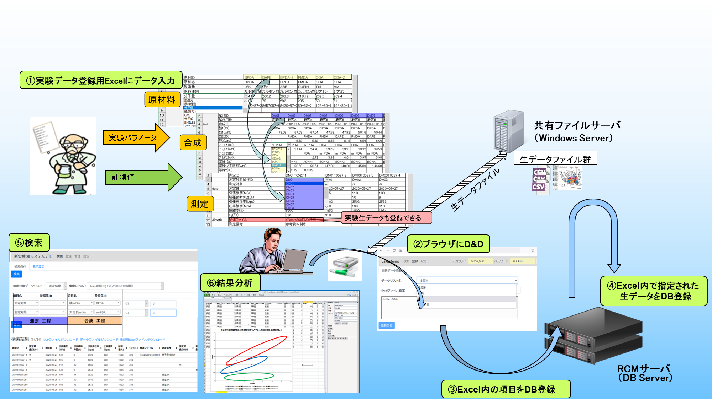

簡易実験データベース『Simple Experiment DB』
簡易実験データベース『Simple Experiment DB』 - 目次
- 概要
概要
研究開発では、テーマや実験及び分析方法が目まぐるしく変わっていくため、実験工程や項目の変更が頻発しデータベース化が難しいといわれています。 Simple Experiment DBは、研究開発現場での変化に追従し、複数工程にわたる実験データを一括管理できる、研究開発に特化して開発されたデータベースです。
使い慣れたExcelを用いてデータを入力し、ブラウザにD&Dするだけで、データベースへ実験データを登録することができます。登録したデータは、複数工程にまたがった条件で検索することができ、目的に応じたデータを的確に絞り込めます。弊社製品多変量データ自動分類プロット『Simple Clustering Plot(SC Plot)』との連携により、多変量データの傾向、依存性の分析にも役立ちます。
Simple Experiment DBコンセプト
研究開発現場においては、データ管理は極めて属人的になりがちでした。そのため、実験結果を研究者間で共有し、それらを比較し、総合的に分析しようとしても、そもそもデータが見つからなかったり、データがあってもデータの形式や種類に統一性がないために必要なデータが欠損していたりして、結局、再度実験をやり直さざるを得ないことがしばしばありました。また、研究開発部門では、新しい材料を利用したり、工程を考案することが良くあります。そのため、項目の追加や変更が激しくなりますが、従来の様々なシステムでは、これら変化に対応することが困難であり、それが研究開発部門のデータベース化が難しい理由の一つとなっていました。
Simple Experiment DBは、実験データ登録用Excelに実験データを入力し、ブラウザ経由で実験DBサイトに登録することで手軽に実験データのデータベース化を実現します。また、項目の追加や変更もお客様自身で実施可能であり、変化の激しい研究開発の現場にも即応できます。
関連ファイルが共有ファイルサーバ上のパスとして指定されていた場合には、共有ファイルサーバ上のファイルをRCMのファイルサーバに格納し、実験データセットと紐づけてデータベース化します。
データベース化された実験データは、ブラウザ上で検索条件を指定し検索することができます。検索結果は手元のPCにダウンロードして利用します。
検索結果をダウンロードしたExcelはSC Plotに対応しているため、多変量データの分類(クラスタリング)プロットが可能です。
また、検索結果の実験データに紐づけられた関連ファイルを一括してダウンロード（DL）することも可能です。
『Simple Experiment DB』は、実験での条件とその結果データを一括管理することにより、研究開発を支援します。
●「Simple Experiment DB」の主な特長- Excel&データベース連携機能
-
実験データ登録用Excelは、起動時に共有ファイルサーバにアクセスし、辞書情報を最新に更新します。これによりDBとの整合性を確保し、入力ミスによるブレを防ぎ、実験工程(データリスト)間の紐づけ管理を実現します。
- 関連ファイル登録機能
-
実験データ登録用Excelにおいて、共有フォルダドライブ上のパスを指定することで、関連ファイルをRCMサーバに回収し、実験データセットと紐づけて管理することを可能にします。
検索結果の実験データセットに紐づいた関連ファイルは、手元PCに一括ダウンロードできます。
時系列データや根拠となった論文など、検索条件や解析で使用することが少ない情報を実験データセットと紐づけて管理したい場合に活躍します。
- 開閉ボタン機能
-
実験データ登録用Excelの入力画面において、入力に必要な固定項目名以外を非表示にするボタンを作成する機能です。
項目数が100を超えるような実験の場合に、用途に沿った項目だけを表示することで入力を支援します。
- 多工程データ一括検索機能
-
データベース化された実験データを、ブラウザから条件を指定して検索することを可能にします。
また、対象とする実験工程（データリスト）の上流の実験工程のデータも2次元の形式に射影して取得できるので、これまで解析の準備のために行っていた実験工程間のデータの結合作業の手間から解放され、実験工程(データリスト)を跨いだ解析が容易に可能になります。
- SCPlot連携機能